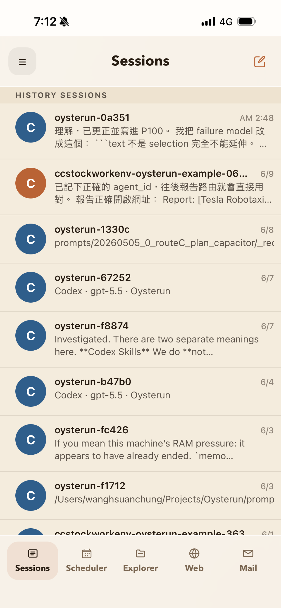
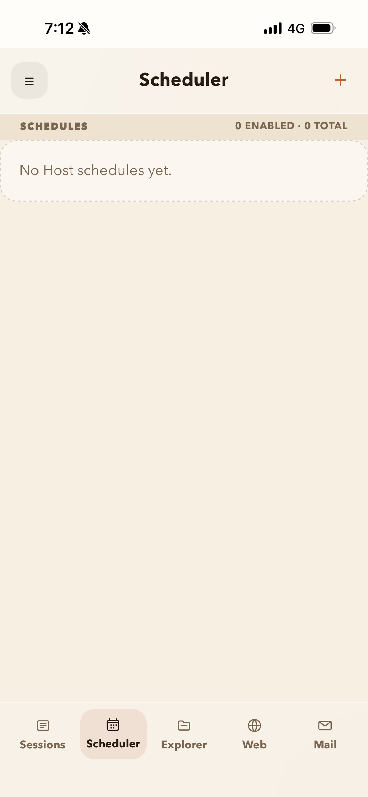

Continue a session
Reply to Claude Code or Codex without opening your laptop.
What you can do from the phone
Reply to Claude Code or Codex without opening your laptop.
Typed the wrong instruction or saw the agent going in circles? Stop it from your phone.
Publish agent produced sites, access in the general browser, and share with others with various permissions.
Explore your computer's file system from Oysterun, open folders, inspect agent outputs, and find the files created during a session.
Agents are good at generating MD/HTML. Oysterun makes those reports easy to open on iPhone, and lets you preview code files, logs, and other outputs in place.
Get notified when work finishes, blocks, errors, or scheduled jobs need attention.
Built for agents, not just humans
Oysterun tools are designed to be operated by people, Claude Code, and Codex. They can search prior context, access files, publish a website, schedule jobs, send notifications, and inspect outputs.
A normal day with Oysterun
You ask Codex to build a report. Then you leave your desk. The agent keeps running on your computer, Oysterun notifies you when it needs a decision, and the finished HTML report opens on your iPhone.
The product surfaces




Why Oysterun exists
Today's agents are powerful, but the working loop is still built around developer habits: terminals, SSH, cloud dashboards, scattered files, long-running jobs, and no simple way to know when the agent needs you.
Oysterun exists to make agents feel like something you can live with: running on your own computer, close to your files and tools, but reachable from the phone you already carry.
Let the agent keep working while you leave the desk.
Open sessions, files, reports, and schedules from one mobile surface.
Keep Claude Code and Codex on your computer instead of moving the work elsewhere.
Why local-first matters
Oysterun is not trying to move your agent into a central cloud. Your conversations, files, tools, and runtime stay on your Host. Oysterun Cloud is limited to pairing support, identity, notifications, and operational security.
Use the Claude Code or Codex workflow you already trust.
The Host runs on your Mac or Linux machine, close to your files and tools.
Your phone gives you the review, stop, inspect, and notification layer.
Fully open source
Oysterun is built to be inspected, modified, and adapted. Read the code, change the Host, build your own tools, and keep your agent workflow under your control.